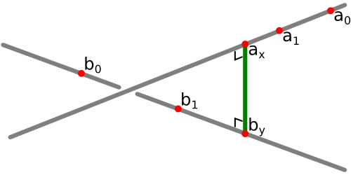
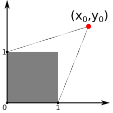

— for the impatient : a chain builder —
Like promised at the end of the previous page, we now present a simple way of checking if a polygonal chain self-intersects.
As the title imply, the difficulty of this problem lies in computing the distance between two segments in 3D space.
Indeed, let us suppose we have a segdis(a0, a1, b0, b1) function, which gives us the distance between line segments
\([a_0 a_1]\) and \([b_0 b_1]\). Then finding the segments of a polygonal chain that are in a collision is easy.
In pseudocode, we could do :
function collisions( p )
for i in 0..n-1 do
c[i] := false
for i in 0..n-1 do
for j in i+2..n-1 do
if segdis( p[i], p[i+1], p[j], p[j+1] ) < SMALL
c[i] := true
c[j] := true
return c
This function takes as input the vertices of a polygonal chain and gives us back an array c of boolean values,
with (c[i] = true) if and only if the \(i\)th segment intersects another segment of the chain.
The SMALL constant is a small positive value depending on the thickness of the chain in our particular implementation.
So what we need is a way to compute the distance between two line segments. To see how to do this, let us first introduce some notation. We want the distance between segments \([a_0 a_1]\) and \([b_0 b_1]\), and we let : \[ u := (a_1 - a_0) \qquad v := (b_0 - b_1) \qquad w := (b_0 - a_0) \] So we have the following parameterizations for our two segments : \[ a_x := a_0 + x\,u \qquad b_y := b_0 - y\,v \] That is, the points on \([a_0 a_1]\) are the points \(a_x\) for \(0 \leq x \leq 1\), and similarly for \([b_0 b_1]\). The distance between points \(a_x\) and \(b_y\) is : \[ f(x,y) := | a_x - b_y |^2 = | x\,u + y\,v - w |^2 \] And computing the distance between the two segments is the same than solving the following problem : \[ \begin{align} \text{min} & f(x,y) \\ \text{s.t.} & 0 \leq x \leq 1 \\ & 0 \leq y \leq 1 \end{align} \] The function \(f\) being quadratic, this is a quadratic programming problem, for which there exist general solving algorithms. But it would be a bit overkill to implement a whole quadratic solver for our comparatively easy segment distance problem ! So we want a more direct way of computing the distance. I will more or less follow the explanations in this article by Dan Sunday.
As a first step, we compute the distance between the two lines \((a_0 a_1)\) and \((b_0 b_1)\). Let us suppose that \(x\) and \(y\) minimize \(f(x,y)\), without any constraint on \(x\) or \(y\), i.e. one or both of them could be outside the \([0,1]\) interval. Then the lines \((a_0 a_1)\) and \((b_0 b_1)\) are closest at points \(a_x\) and \(b_y\) respectively, and it is clear that the segment \([a_x b_y]\) is simultaneously perpendicular to each of the two lines (see the picture).
So, using the scalar product, we know that : \[ \begin{align} 0 & = (a_1 - a_0) \cdot (a_x - b_y) = u \cdot (x\,u + y\,v - w) \\ 0 & = (b_0 - b_1) \cdot (a_x - b_y) = v \cdot (x\,u + y\,v - w) \end{align} \] Which brings us to the following system of linear equations : \[ \begin{pmatrix} u \cdot u & u \cdot v \\ v \cdot u & v \cdot v \end{pmatrix} \begin{pmatrix} x \\ y \end{pmatrix} = \begin{pmatrix} u \cdot w \\ v \cdot w \end{pmatrix} \] The determinant of this system is : \[ \Delta = (u \cdot u)(v \cdot v) - (u \cdot v)^2 = |u \times v|^2 \] Because of this classic identity. Remark that we now see why I chose to use the \(u,v,w\) vectors : it allows us to write the linear system and its determinant in a nice and tidy form.
When \(\Delta \neq 0\), Cramer's rule gives us : \[ \begin{align} x & = \frac{ (u \cdot w)(v \cdot v)-(u \cdot v)(v \cdot w) }{ \Delta } = \frac{ (u \times v) \cdot (w \times v) }{ \Delta } \\ y & = \frac{ (u \cdot u)(v \cdot w)-(u \cdot w)(v \cdot u) }{ \Delta } = \frac{ (u \times v) \cdot (u \times w) }{ \Delta } \end{align} \] When \(\Delta = 0\), the two vectors \(u\) and \(v\) are proportional, so the two equations are dependent, and we can choose any value for \( x \) and then use one of the two equations of the system to find the value of \( y \). For example, by putting \(x:=0\) into the second equation, we get : \[ \begin{align} x & = 0 \\ y & = \frac{v \cdot w}{v \cdot v} \end{align} \] The geometric meaning behind this is that when \(\Delta = 0\), the two lines are parallel (because \(u\) and \(v\) are proportional), and so the distance from \(a_x\) to the line \((b_0 b_1)\) is the same for every \(x\).
We now go back to the problem of finding the distance between the segments \([a_0 a_1]\) and \([b_0 b_1]\), that is we want to find the \((\hat{x},\hat{y}) \in [0,1]\times[0,1]\) for which \(f(\hat{x},\hat{y})\) is the smallest possible. Let us first compute the global minimum \((x_0,y_0)\) of \(f(x,y)\), using the formulas we just found. If \((x_0,y_0)\) is inside the square \([0,1]\times[0,1]\), we have nothing to do, so suppose that it is outside. In the \(xy\)-plane, we have the following picture :
Now, \(f(x,y)\) defines a paraboloid over the \(xy\)-plane with a minimum at \((x_0,y_0)\), so the value of \(f\) increases along the rays starting at \((x_0,y_0)\). So the point \((\hat{x},\hat{y})\) will be on one of the edges of \([0,1]\times[0,1]\), i.e. at least one of the following is true : \(\hat{x}=0\), \(\hat{y}=0\), \(\hat{x}=1\), or \(\hat{y}=1\).
Suppose that \(\hat{x}=0\). We compute the minimum of \(f\) on the \(x=0\) line by taking the derivative of \(f(0,y)\) with respect to \(y\) and equating it to \(0\) : \[ \frac{d}{dy} f(0,y) = 2 \, v \cdot (y\,v - w) = 0 \quad \Longrightarrow \quad y = \frac{ v \cdot w }{ v \cdot v } \] If \( \frac{ v \cdot w }{ v \cdot v } \in [0,1] \) then \( (0, \frac{ v \cdot w }{ v \cdot v }) \) will be a candidate for \((\hat{x},\hat{y})\). If \( \frac{ v \cdot w }{ v \cdot v } < 0 \) it is \( (0,0) \) that is a candidate, and if \( \frac{ v \cdot w }{ v \cdot v } > 1 \) it is \( (0,1) \). So in all case we get a candidate for \((\hat{x},\hat{y})\).
By doing this for every edge of \([0,1]\times[0,1]\) we find a maximum of four candidates. We now just have to evaluate \(f(x,y)\) on every candidate, and picking the candidate on which \(f\) is the smallest.
Remark that the only place where we used the fact that the line segments are in \( \mathbb{R}^3 \) is when using the cross product to allow for prettier formulas. Indeed, the line segments don't need to be in \( \mathbb{R}^3 \) for the method to work, so we actually get an algorithm for computing the distance between two line segments in \( \mathbb{R}^n \), for any \( n \geq 2 \) !
The Three.js example making use of polygonal chain collision detection I made is app3.html. It is an application that let you build and fold a polygonal chain, and it detects self-intersections so you can't make the chain pass through itself. The implementation will not be discussed here.